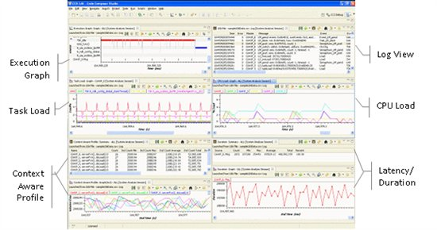

Welcome to System Analyzer
System Analyzer
provides system analysis and visibility using low overhead real-time software
instrumentation. Data is collected remotely via Ethernet or locally via JTAG
(run or stop mode) or USB/UART and is time correlated across the different cores to give
visibility into the real-time performance and behavior
of the entire system.
Features supported in System Analyzer include:
- Instrumentation library (UIA) for
low overhead and portable software instrumentation
(SYSBIOS is pre-instrumented for CPU Load, Task Execution and OS
Event visualization)
- Correlation of software instrumentation across multiple cores
- Remotely or local system analysis
- Ethernet and JTAG (run and stop mode) and USB/UART transports
- Analyze system live or capture data and post-process
- Analysis features include:
- System Execution Analysis
- Concurrency Analysis
- Benchmark/Duration Analysis
- CPU and Task Load Analysis
- Context Aware Function Profile
- Statistics/Count Analysis
- Feature rich user interface (measurement markers, view synchronization, advanced filter/find, zoom, etc.)
- Supported on ARM, C6000 and Cortex-M devices
System Analyzer is available from Code Composer Studio Tools Menu.
Getting Started
Guide, User Guide, tutorial, etc. are available in Code Composer Studio
help and on the System Analyzer wiki page, here.
